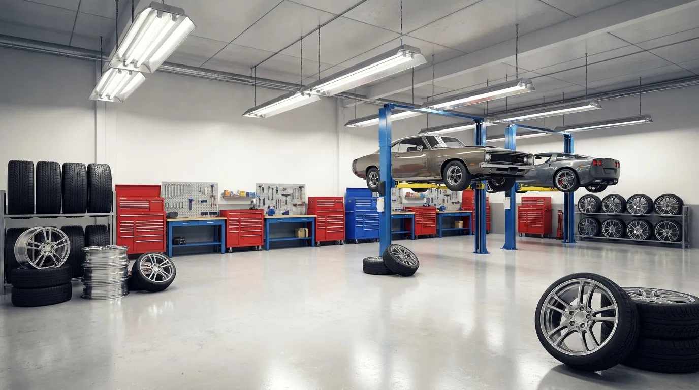
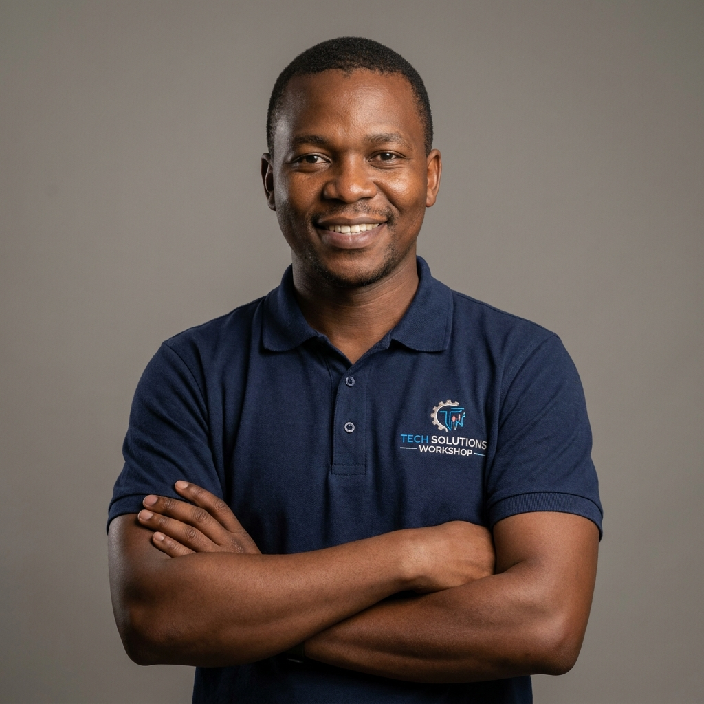
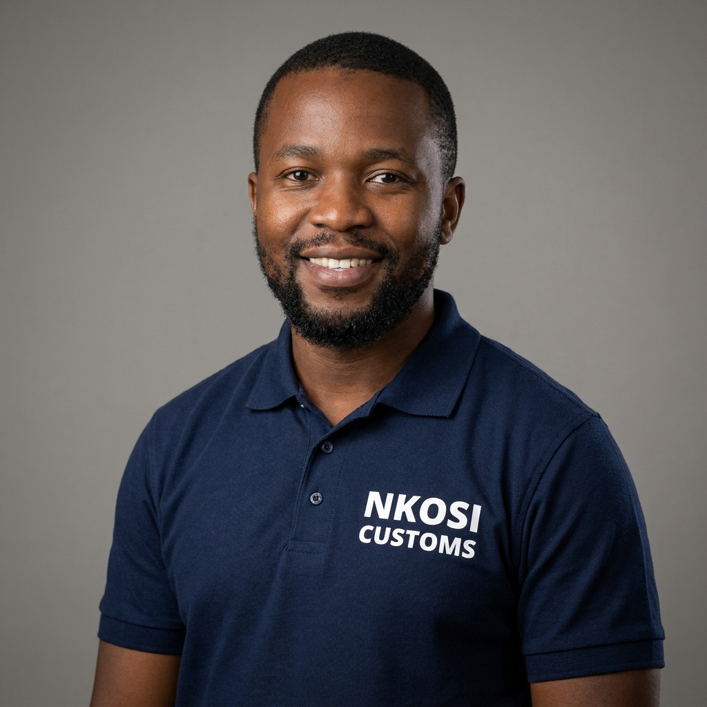

Our History
Nkosi Customs was founded in 2015 by a small group of motoring enthusiasts who turned a backyard passion for modifying cars into a fully-fledged customisation workshop. What began as a single bay in Randburg has since grown into a two-branch operation serving customers across Gauteng, built on a reputation for honest advice and quality workmanship.
Over the years, we have fitted thousands of rim and tyre combinations, tuned countless suspension setups, and built sound systems ranging from daily-driver upgrades to competition-level installations. Every project, big or small, is treated with the same attention to detail.

Our Mission
To provide every customer with safe, high-quality vehicle customisation solutions that reflect their personal style, backed by transparent pricing and expert technical advice.
Our Vision
To be recognised as South Africa's most trusted car customisation brand, known for craftsmanship, integrity, and innovation in rims, tyres, suspension and in-car audio.
Meet the Team
-

Thabo Nkosi
Founder & Master Technician — 12 years' experience in suspension and alignment.
-
Lerato Dube
Workshop Manager — oversees daily operations and quality control.
-

Sipho Mahlangu
Audio Systems Specialist — custom sound system design and installation.